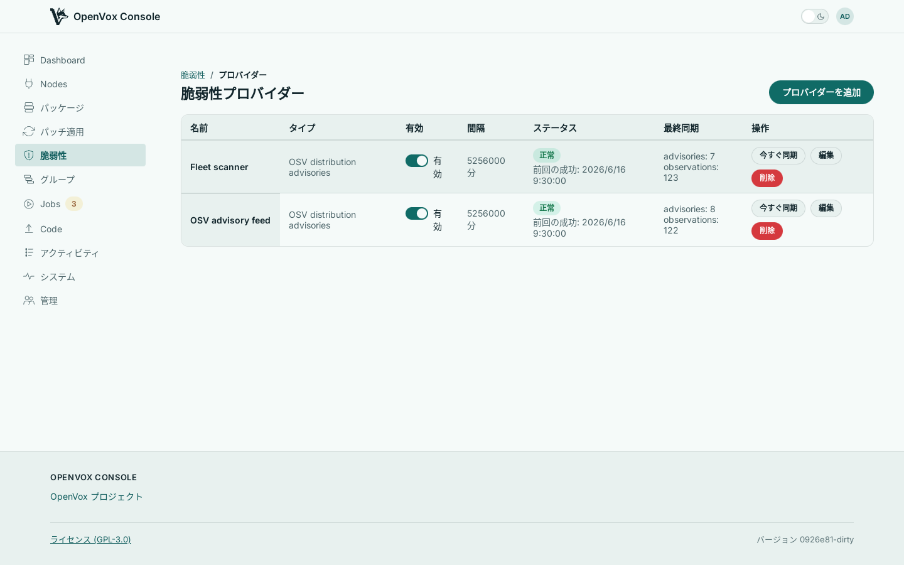

使う
脆弱性を追跡する
脆弱性プロバイダーを設定し、フリートの検出結果を読み、各プロバイダーに見えるものと見えないものを把握します。
コンソールは、1 つ以上のプロバイダーからの情報をまとめて、どの Node がどの既知の脆弱性の影響を受けているかを報告します。各プロバイダーのデータを各 Node が報告するパッケージと照合するため、Node でパッケージの報告を有効にしておく必要があります: Node を追加するを参照してください。
検出結果の閲覧には vulnerabilities:read が、プロバイダーの設定には vulnerabilities:manage が必要です。どちらも nodes:read には含まれません: 検出結果はインベントリよりも機密性が高いためです。
プロバイダーを選ぶ
| プロバイダー | データの取得元 | 認証情報 |
|---|---|---|
| OSV | 公開 OSV データベース、または独自のミラー | なし |
| Tenable | Tenable テナント | API キー |
複数のプロバイダーを同時にいくつでも動かせます。データの場所が異なる 2 つの OSV プロバイダーも可能です。複数のプロバイダーが報告した脆弱性は 1 件として表示され、各プロバイダー独自の深刻度と修正版が並べて示されます。
プロバイダーを有効にするまで、コンソールから外部へ何かが送られることはありません。
認証情報の準備をする
認証情報を持つプロバイダーには、データベース内でそれを封印するための鍵が必要です。鍵を生成し、CONSOLE_SECRETS_KEY_FILE で指定します:
openssl rand -base64 32 > secrets.key
chmod 600 secrets.key
これがなくても OSV は機能しますが、認証情報を必要とするプロバイダーは、その設定名を示すエラーとともに拒否されます。
鍵はデータベースのバックアップと一緒にバックアップしますが、保管場所は分けてください。鍵を失っても検出結果は失われませんが、保存済みの認証情報はすべて読めなくなり、新しい鍵のもとで認証情報を入力し直すまで、それらのプロバイダーは失敗します。
プロバイダーを追加する
- 脆弱性、プロバイダーの順に開きます。
- 目的の種類のプロバイダーを追加し、設定と必要な認証情報を入力します。コンソールが保存済みの認証情報を再表示することはありません。編集時に保存済みの認証情報を維持するには、認証情報のフィールドを空のままにします。
- 有効にします。


すぐに同期し、その後はスケジュールに従って同期します (OSV の既定は 1 時間ごと)。検出結果は Puppet run のたびではなく、プロバイダーが同期したときに更新されます。
OSV がダウンロードするもの
OSV は、フリートで動いているディストリビューションのデータだけを、既定では storage.googleapis.com から HTTPS でダウンロードします。ディストリビューションの初回同期ではアーカイブ全体 (Debian で約 70 MB、Ubuntu で約 700 MB) をダウンロードし、以降の同期では変更分だけを取得します。
エアギャップ環境
OSV プロバイダーのデータの場所を、OSV バケットの内部ミラーに向けます。ミラーはディストリビューションごとに同じ構成にします: その all.zip、その modified_id.csv、そして変更されたレコードごとの JSON ファイル。素の静的 Web サーバーで十分であり、各ディストリビューションのディレクトリをコピーすれば中身が揃います:
gsutil -m rsync -r gs://osv-vulnerabilities/Debian ./Debian
ディレクトリ名には Rocky Linux や Red Hat のように空白が含まれます。
Tenable
Tenable プロバイダーは、まず未解決の検出結果をすべて取り込み、以降は変更分だけを取り込みます。各 Tenable アセットは、その名前を各 Node の certname および報告された FQDN と照合して Node に対応付けられます。どの Node にも一致しない、または複数に一致するアセットはスキップされ、未一致として数えられます。この数が増えている場合、たいていは Tenable が certname とは異なる名前を見ています。
検出結果を読む
脆弱性ページには、フリート全体の検出結果が深刻度の高い順に、それぞれが影響する Node の数とともに一覧表示されます。既定では修正が利用可能な検出結果、つまりパッチ適用で変わるものが表示されます。修正がリリースされていないものも含めるには、修正をすべてに設定します。
有効なプロバイダーのどれも評価できなかった Node は、各プロバイダーの理由とともに未評価と表示され、問題なしとして表示されることはありません:
| 理由 | 意味 |
|---|---|
| 未対応の OS | OSV は Debian、Ubuntu、AlmaLinux、Rocky Linux、RHEL 7～10 をカバーします |
| パッケージデータなし | Node がパッケージを報告していない。その Node で報告を有効にしてください |
| エージェントのアップグレードが必要 | Node のパッケージデータが古すぎて確実に照合できない。Node エージェントをアップグレードすれば、次の Puppet run で解消されます |
| Tenable が未検出 | Node に一致する Tenable アセットがない |
| 未同期 | プロバイダーが同期を完了していない |
OSV に期待できること
- Debian と Ubuntu では、ディストリビューションが無視できると評価した脆弱性や、修正しないと決めた脆弱性の多くも、修正がリリースされていない検出結果として表示されます。一覧が「fix available」から始まるのはそのためです。
- RHEL の Node は、メインのリポジトリとのみ照合されます。延長サポートやアドオンのリポジトリを使っている Node には、実際には該当しない検出結果が表示されることがあります。
- AlmaLinux は深刻度を公開していないため、その検出結果は不明と表示されます。
古いカーネルや、ずっと前に削除した他のパッケージに対する検出結果は、たいていパージせずに削除され、設定ファイルが残っているパッケージから来ています。Node 上で apt purge '~c' を実行してパージすれば、プロバイダーの次回の同期で検出結果はクローズされます。